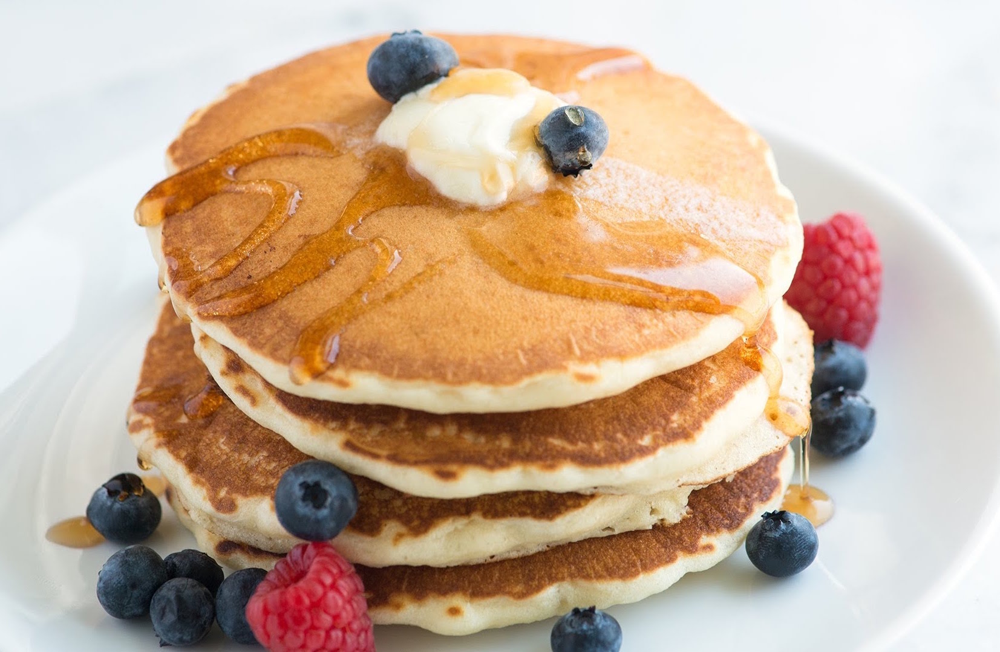

Breakfast Pancakes
Ingredients
- 3 eggs
- 2 slices of bread
- 10g butter
- 2 slices of cheese
- 4 dl milk
- 2 cups of cereal
Directions
- Toast the bread, and add the butter and cheese on them.
- Heat a frying pan and crack the eggs in the frying pan and cook the eggs
until the whites and yolk reach the desired consistency for your
average sunny side upp eggs.
- Add milk and cereal in a bowl.
- Mix the everything together in a bowl and fry in frying pan.
- Enjoy your breakfast flavored pancakes!
Nutrition facts
- Total Fat 3.69g - 0.1%
- Saturated Fat 1.394g - 0.1%
- Dietary Fiber 0.1g - 0.1%
- Sugars 8.42kg - 99%
- Protein 3.47g - 0.1%
Comments
-- [Wed 07 Sep 9:59] by Niclas
-- [Wed 07 Sep 10:00] by Adam
-- [Wed 08 Sep 03:00] by Robin